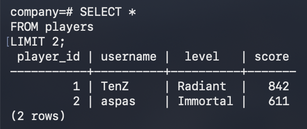
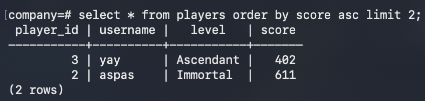
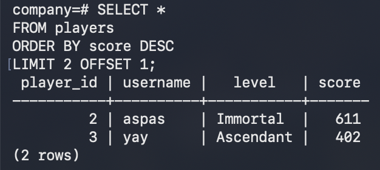

LIMIT restricts the number of rows returned.
Problem: A players table in production might have 5 million rows. SELECT * FROM players would return all 5
million. That crashes slow clients, wastes bandwidth, and locks the database longer.
Solution: LIMIT returns only the first N rows. This is also used for pagination.
Current table:
| username | score |
|---|---|
| TenZ | 842 |
| aspas | 611 |
| yay | 402 |
MySQL / PostgreSQL
SELECT *
FROM players
LIMIT 2;
|
 |
 |
Note: LIMIT without ORDER BY returns arbitrary rows.
OFFSET skips a number of rows before LIMIT starts counting.
Problem: LIMIT alone always returns the first N rows — but to show page 2, page 3, and so
on, you need to skip the rows already shown.
Solution: OFFSET skips the first M rows and LIMIT takes the next N. Together they
paginate: page 1 is LIMIT 2 OFFSET 0, page 2 is LIMIT 2 OFFSET 2, and so on.
MySQL / PostgreSQL
SELECT *
FROM players
ORDER BY score DESC
LIMIT 2 OFFSET 1;
|
 |
OFFSET 1 skips TenZ; LIMIT 2 then returns the next two rows.
Note: OFFSET only makes sense with ORDER BY — without a fixed order, "skip the first one" has no defined meaning.
Note: A large OFFSET is slow: the database still reads and discards every skipped row, so OFFSET 1000000 scans a million rows just to throw them away. For deep pagination, keyset pagination (WHERE score < last_seen_score ... LIMIT N) is faster.
Prev, DQL. <<
Next, we're going through common DQL operators. >>